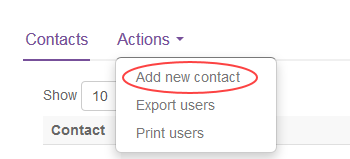

How to create an OpenShift user in the UKCloud Portal
Overview
If your cluster is using OpenShift Container Platform 3.10 or later, you can create users in the UKCloud Portal so that users need to remember only one lot of credentials and can also take advantage of two-factor authentication (2FA) that is provided via the Portal.
Note
If your cluster is using an earlier version of OpenShift Container Platform, you must create users within OpenShift. For more information see the OpenShift Managing Users documentation.
Creating a new OpenShift user
To create a new user:
Log in to the UKCloud Portal
For more detailed instructions, see the Getting Started Guide for the UKCloud Portal.
Note
You must log in as a Portal administrator for the account that includes the OpenShift cluster.
If necessary, switch to the account that includes the OpenShift cluster.
In the navigation panel, expand Contacts, then select All Contacts.

From the Actions menu, select Add new contact.

On the New Contact page, provide the user's name and contact information, then click Save.

After you've created the user account, you must raise a Service Request via the My Calls section of the UKCloud Portal to grant the user access to the OpenShift cluster.
a. In the navigation panel, expand Support, then select My Calls.

b. Click Go to My Calls Portal.
c. Click New Service Request.
d. Select Generic Service Request.
e. From the UKCloud Service list, select UKCloud for OpenStack.
f. In the Additional Details field, enter
Add Portal users to OpenShift clusterand provide the following information:The name(s) of the user(s), and their username(s), that you want to add to the OpenShift cluster.
The URL of the cluster that the user(s) should be added to. If there are multiple clusters the user(s) needs adding to then specify all of the cluster URLs here and it can be completed as one task.
g. When you're done, click Review & Submit.
When the Service Request is resolved, the identified users can log in to the OpenShift web console and CLI using their UKCloud Portal credentials.
If you've enabled two-factor authentication (2FA) in the account that includes the OpenShift cluster and users have set up 2FA for their user accounts, they will be prompted to provide a 2FA code when logging in to OpenShift.
Feedback
If you find an issue with this article, click Improve this Doc to suggest a change. If you have an idea for how we could improve any of our services, visit the Ideas section of the UKCloud Community.